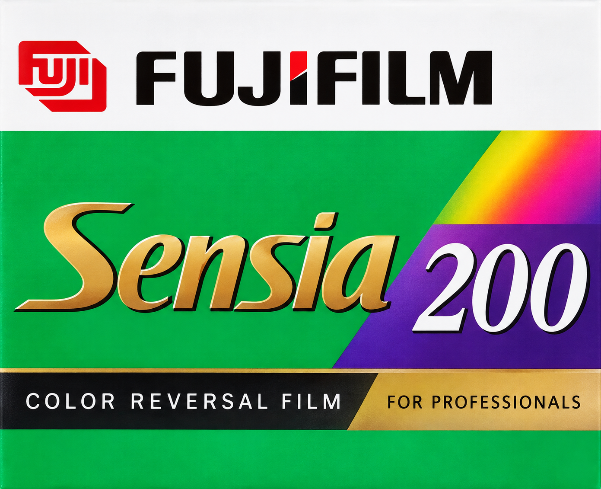
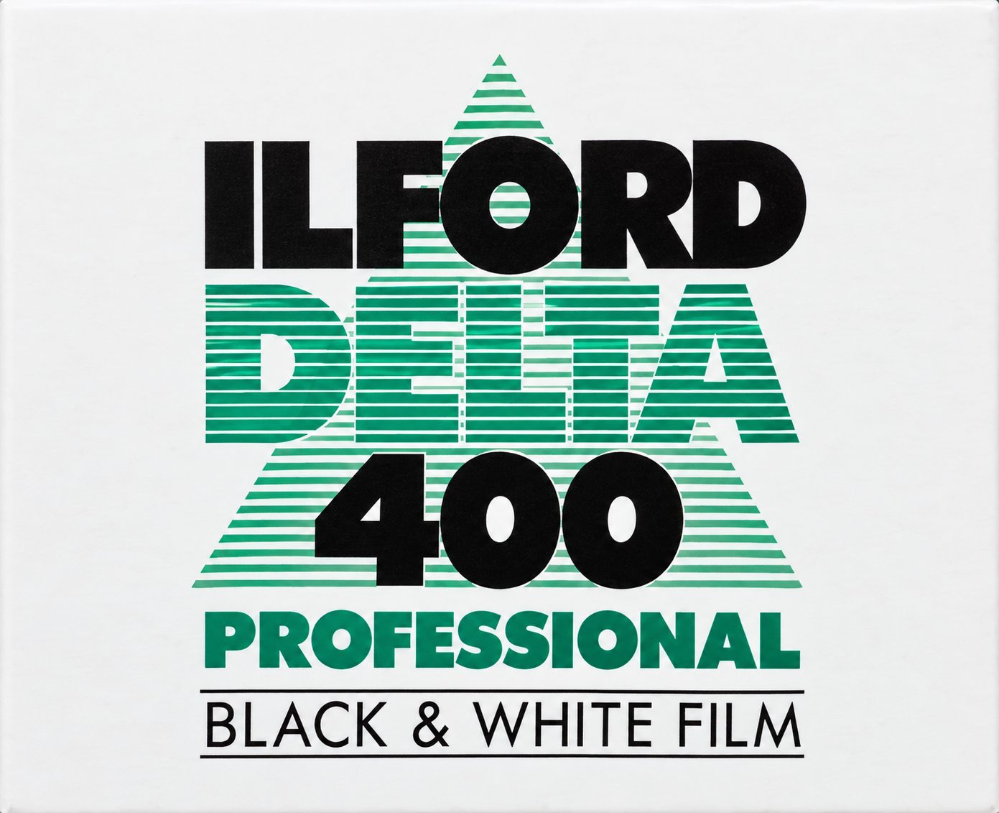
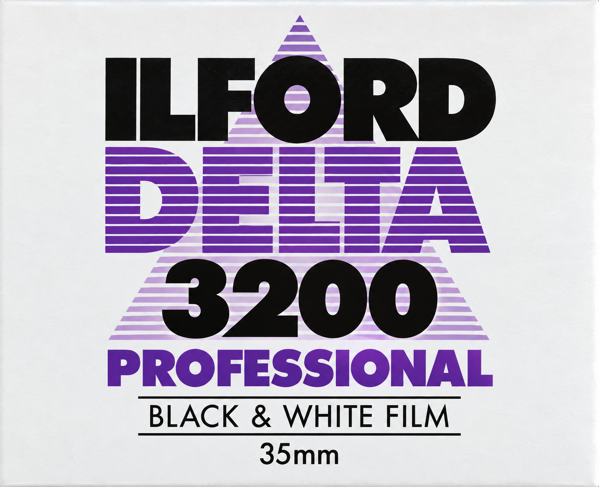
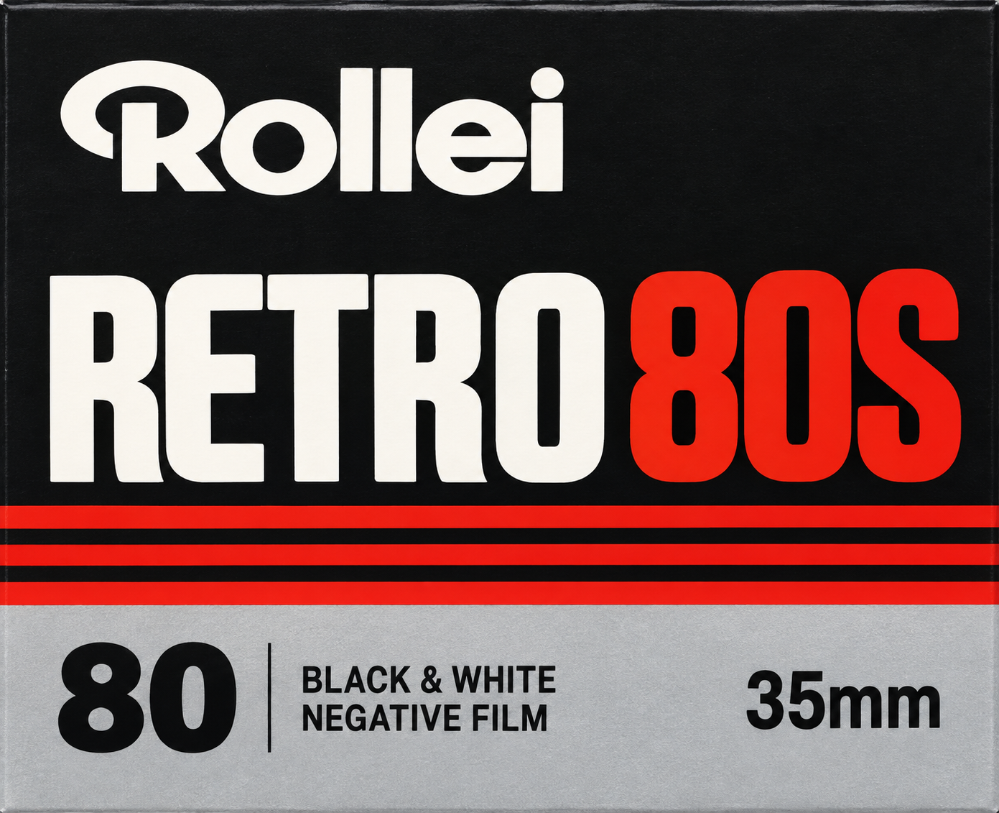
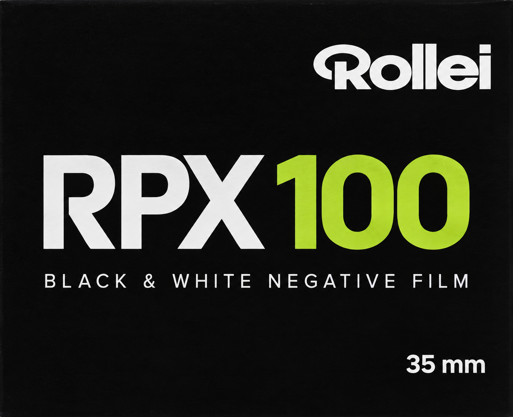
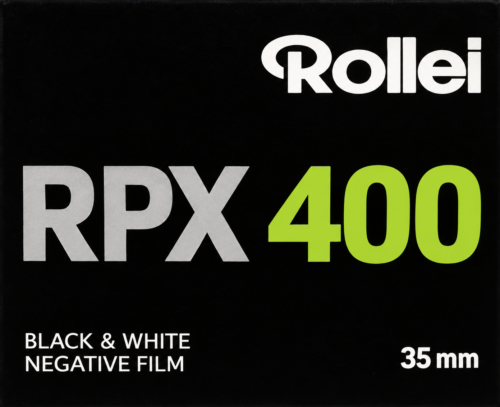
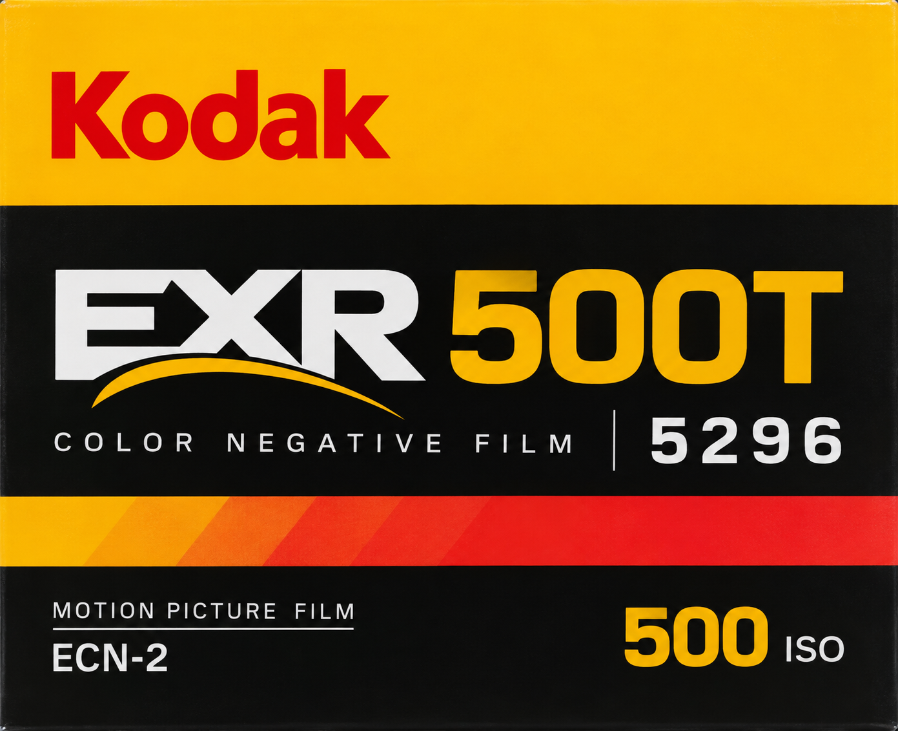
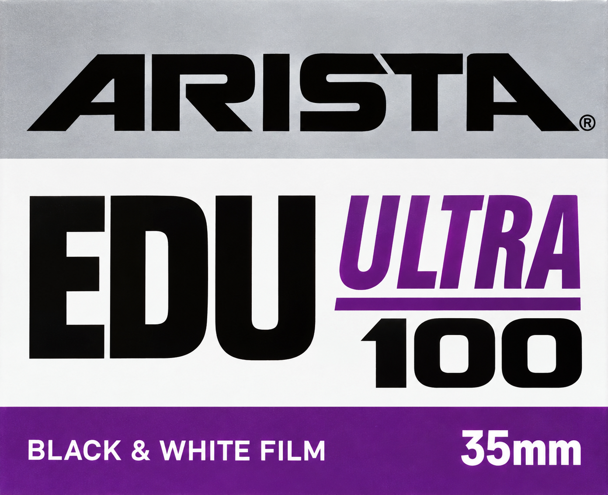
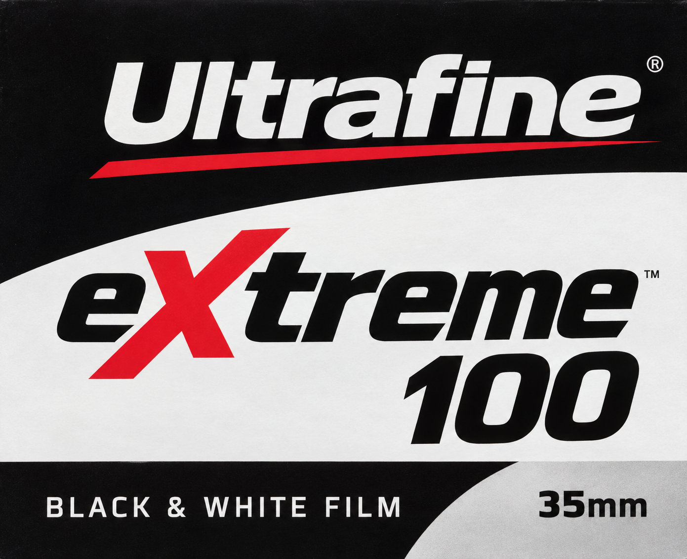
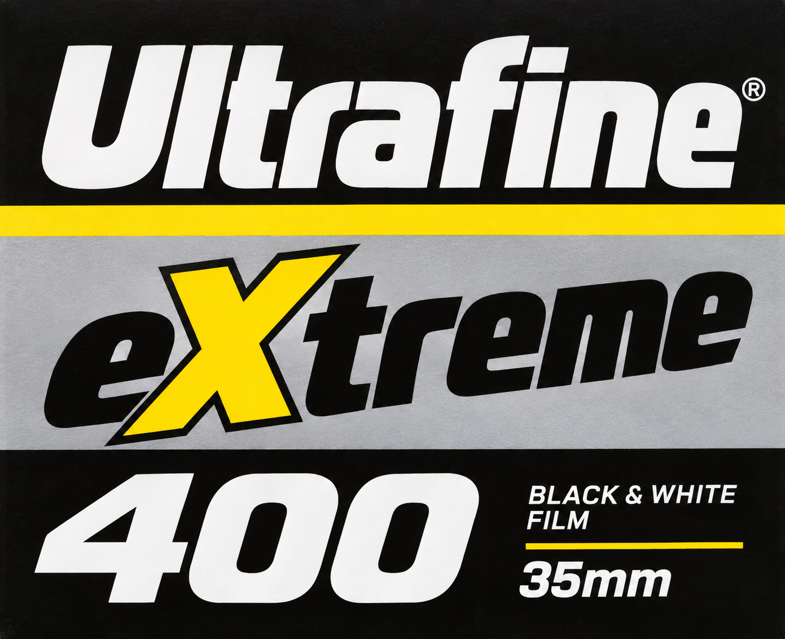

Fujifilm Sensia 200
OCR: pi FUJIFILM | senska | COLOR REVERSAL FILM | FOR PROFESSIONALS
OCR có thể đọc nhầm chữ cách điệu. 39 cờ dưới đây không đồng nghĩa 39 ảnh sai; một số mẫu đã xem trực tiếp vẫn đọc được đúng tên và ISO.
Toàn bộ các đợt
OCR: pi FUJIFILM | senska | COLOR REVERSAL FILM | FOR PROFESSIONALS

OCR: ILFORD | TEL | 400 | PROFESSIONAL | BLACK & WHITE FILM

OCR: ILFORD | 3200 | PROFESSIONAL | BLACK & WHITE FILM | 35mm

OCR: Kodak | UltraMaх | COLOR NEGATIVE FILM | 400 | 35mm | C-41

OCR: kodak | TMAХ400 | BLACK & WHITE NEGATIVE FILM | 400 тмAx | 35mm

OCR: FUJIFILM | MOTION PICTURE FILM | EERNA | 400T2593 | 8583 | COLOR NEGATIVE FILM | 35mm | | CINEMA FILM | ECN-2

OCR: lomogrophy | COLOR | 800 | 35mm C-41

OCR: FUJIFILM | SUPER G | HuWS | 800 | 35mm | COLOR | PRINT FILM

OCR: Kodak | Kodaco or | COLOR NEGATIVE FILM | 200 | 35 mm

OCR: Kodak | T-MAХ | P3200 | BLACK & WHITE NEGATIVE FILM | 35 mm | FILM | 3200

OCR: lamography | DRCA100 | BLACK & WHITE | FILM | 110

OCR: lomogrophy | COLOR | TIGER | 110 | NEGATI | NEGATIVE | FILM | C-41

OCR: Reflx Lab | 100 | 35mm I | COLOR NEGATIVE FILM | 1 C-41

OCR: Reflx Lab® | 200 | BLACK & WHITE FILM | 120 | B&W PROCESS

OCR: Konica | G | COLOR PRINT FILM | 35mm | C-41

OCR: AGFA | Agfa | 100 | PROFESSIONAL | 35mm

OCR: AGFA | Agfa | АРХ | 400 | PROFESSIONAL | BLACK & WHITE FILM | 35mm

OCR: Rollei | PETRO80S | 80 | BLACK & WHITE | NEGATIVE FILM | 35mm

OCR: Kodak | Extacolor Pro® | 400 | 35mm | COLOR | NEGATIVE FILM

OCR: Коdаk | Gola | COLOR NEGATIVE FILM | 35mm | 100

OCR: Kodak | 35mm | 400 | Gola | COLOR NEGATIVE FILM C-41

OCR: Rollei | PPX100 | BLACK & WHITE NEGATIVE FILM | 35 mm

OCR: Rollei | RPY 400 | BLACK & WHITE | NEGATIVE FILM | 35 mm

OCR: kodak | GolO 200 | COLOR NEGATIVE FILM | 35mm | FILM | 200

OCR: FP4 | 125 | BLACK & WHITE FILM

OCR: LFORD | PAN F | EOLST | 50 | BLACK & WHITE FILM | 35mm

OCR: AFORL | SEX | •{0>0 | BLACK & WHITE FILM

OCR: ILFORD® | →saDcF | 400 | BLACK & WHITE FILM | C-41

OCR: ILFORD | 100 | BLACK & WHITE FILM | 35mm

OCR: LFORI | 400 | BLACK & WHITE FILM

OCR: Poma | B&W | FOMAPAN | 400 Actian | 35 mm | BLACK AND WHITE NEGATIVE FILM

OCR: FUJ.FILM | Professional | vevtn | 100 - | COLOR REVERSAL FILM

OCR: tg FUJIFILM | Professional | VOVEN | 100 | COLOR REVERSAL FILM | 35mm

OCR: Kodak | PXR 500T | COLOR NEGATIVE FILM | 5296 | MOTION PICTURE FILM | ECN-2 | 500 | ISO

OCR: AGFA | Agfa | OРIIMIA | COLOR NEGATIVE FILM | 35 mm | C-41

OCR: AGFA | Agfa | PORTRAT | XPS 160 | COLOR NEGATIVE FILM | 35mm

OCR: ARISTA | EDU | ULTRA | 0 0 | BLACK & WHITE FILM | 35mm | ®

OCR: dltrafine | BLACK & WHITE FILM | TrenE | 100 | 35mm

OCR: Ultrafine | • trane | BLACK & WHITE | FILM | 35mm